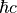

Module: Units
Todo
Describe properties
Todo
Give references
units.py
Module for converting the density units for nuclear matter in the ranges typical for neutron stars.
Numerical
- Constants for dealing with extreme numerics:
NUMZERO= 1e-12 (the lowest numerical value allowed)NUMINF= 1e30 (the largest numerical value allowed)DENSEPSILON= 1e-12
Note
DENSEPSILON is used whenever division by density has to be applied.
Those cases usually will give zero in proper analytical limit.
Physical
Note
- Physical constants are from NIST website:
Constant |
Value |
Unit |
Description |
|---|---|---|---|
HBARC |
197.3269804 |
[MeV fm] |
 |
MN |
939.5654205 |
[MeV] |
neutron mass |
MP |
938.2720882 |
[MeV] |
proton mass |
HBAR2M_n |
20.72124837 |
[MeV*fm |
0.5*hbar^2/MN |
HBAR2M_p |
20.74981092 |
[MeV*fm |
0.5*hbar^2/MP |
 ]
]Todo
Redefine VUNIT with removing 100
- libnest.units.KtoMev(temp)
Function converts temperature units from Kelvins to MeVs.
Todo
formula
- Parameters
temp (float) – temperature
 [K]
[K]- Returns
temperature
[MeV]- Return type
float
See also
- libnest.units.MeVtoK(temp)
Function converts temperature units from MeVs to Kelvins.
Todo
formula
- Parameters
temp (float) – temperature
[MeV]- Returns
temperature
[K]- Return type
float
See also
- libnest.units.fm3togcm3(rho)
Function converts units 1/fm^3 into g/cm^3.
Todo
formula
- Parameters
temp (rho) – density
 [1/fm^3]
[1/fm^3]- Returns
rho
[g/cm^3]- Return type
float
See also
- libnest.units.gcm3tofm3(rho)
Function converts units g/cm^3 into 1/fm^3.
Todo
formula
- Parameters
temp (rho) – density
[g/cm^3]- Returns
rho
[1/fm^3]- Return type
float
See also